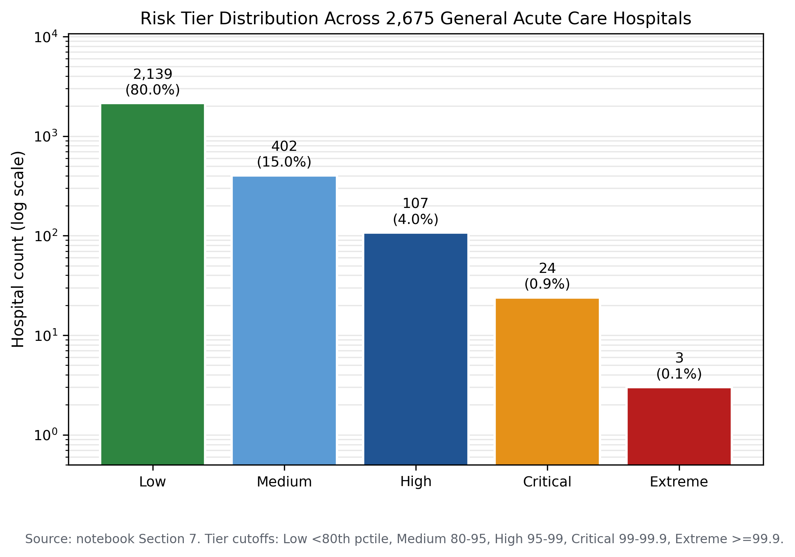
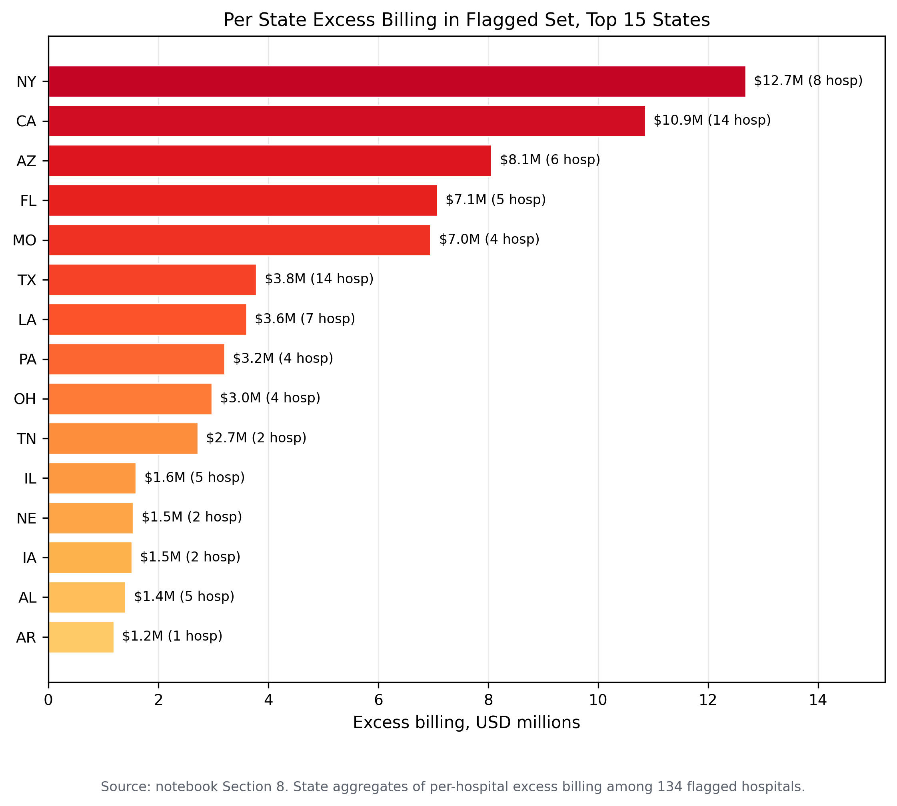
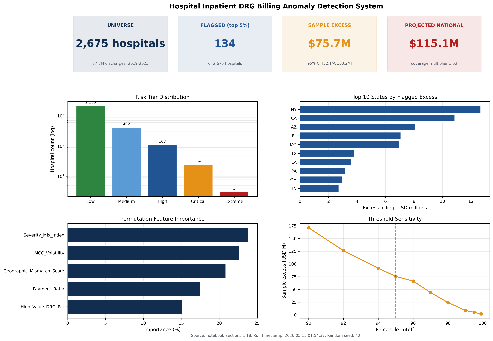

Hospital Inpatient DRG Billing Anomaly Detection
A five feature anomaly detection framework for Medicare inpatient hospital DRG billing patterns covering fiscal years 2019 through 2023. The system analyzes severity mix, payment ratios, high value DRG concentration, MCC volatility, and geographic mismatch to identify hospitals with billing patterns that diverge from peer baselines.
Methodology
The analytical universe consists of 27,269,086 Medicare inpatient discharges across 2,675 acute care hospitals over five fiscal years (2019 through 2023). The universe filter requires acute care designation, a maximum annual discharge volume of one hundred or more, and a five year MCC concentration of ten percent or greater. Specialty hospitals (orthopedic, spine, surgical, psychiatric) are excluded by the MCC filter.
Five features are engineered from the CMS Inpatient Provider Specific File: Severity Mix Index, Payment Ratio, High Value DRG Percentage, MCC Volatility, and Geographic Mismatch Score. Three of the five (Severity Mix Index, Payment Ratio, High Value DRG Percentage) are directional features where only positive z scores indicate risk.
Risk scoring combines a statistical weighted z score with an isolation forest at two percent contamination. The flagged set is the union of statistical top five percent and the isolation forest anomaly set, with the 54 hospital overlap representing the highest confidence flags.
Key findings
The isolation forest identifies 56 hospitals (2.0 percent of the universe) with billing pattern anomalies. The overlap between combined statistical flags and machine learning flags is 54 hospitals, indicating strong agreement between the two methods.
The sample excess billing for the flagged set is 75.7 million dollars across 11,698 excess MCC cases, with a mean per flagged hospital of 564,743 dollars and a maximum of 6.96 million dollars at a single facility.
The DRG family weight differential analysis covers 230 DRG families with MCC versus non MCC pairs, producing a median differential of 7,821 dollars and a mean differential of 8,691 dollars per case.
The five year longitudinal design distinguishes persistent billing pattern anomalies from single year noise, with 2,637 hospitals present in all five years providing a stable longitudinal cohort.
Selected figures



Verification
Every numerical claim in this project traces to a persisted result file in the public rebuild repository. Independent reviewers can reproduce the hospital universe, the five engineered features, the risk scoring, the isolation forest results, and the per hospital excess billing computations from the same CMS Medicare Inpatient Provider Specific File.